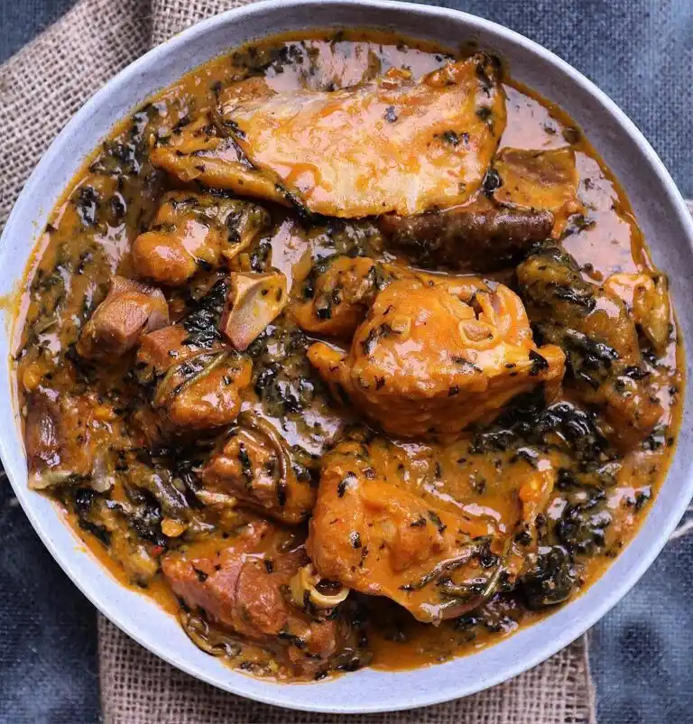

BitterLeaf Soup Recipes

BITTERLEAF SOUP
Bitterleaf soup (Ofe onugbu) is a popular Nigerian soup. This is one of the most traditional soups in Nigeria – particularly to the Igbo tribe of Eastern Nigeria. Due to its name ‘bitterleaf’, a lot people shy away from this soup, especially the of non-Igbos – because they think that its true to its name. Its indeed a quite misleading name for a soup that is not bitter per se. The leaves are thoroughly washed until all its bitterness has been gotten rid of – the soup should not have even the slightest bitterness. Bitterleaf soup is perfect with fufu, a flavoursome Nigerian meal.
Ingredients
- Washed and cleaned bitterleaf
- Assorted meat (beef, kpomo, goat meat, shaki)
- Assorted fish (stockfish, dried fish, smoked fish)
- Ground crayfish
- Palm oil
- Cocoyam (ede)
- Seasoning cubes/liquid/powder (Maggi/Knorr)
- Ogiri (local seasoning)
- Salt and pepper to taste
Tips: before you start cooking, make sure that the bitter leaves has been thoroughly washed and no bitterness left. Can’t get rid of the bitterness? Simply boil the bitters leaves for about 15 times and rinse with cold water. Using dried bitterleaf? Soak in warm water to plump it up, rinse thoroughly to get rid of dirts.
Steps
- Wash and boil cocoyam till soft. Peel the skin off and pound in a mortar until it turns into smooth paste.
- Clean all the meat, season with salt and seasoning cubes – cook together with stock fish and dry fish until they are tender and thoroughly well done.
- Add ground crayfish and pepper. Stir and combine well. Add Palm oil, allow to cook until the oil is well combined with meat stock.
- Turn down the heat, add the cocoyam paste in small lumps. Stir easily and allow to simmer until the lumps are dissolved and well combined. The dissolved cocoyam mixture will start thickening the soup. Too thick? Add more water to loosen up if you feel that the soup is too thick – depending on your preference.
- Add the ogiri, stir and combine. Taste for seasoning and adjust if necessary (all the ingredients at this stage).
- Add bitter leaves, cover the pot and allow to simmer for about 10 minutes. Your ofe onugbu soup is ready.
- Serve with your preferred swallow (garri/eba, semolina, fufu, amala, Cassava Fufu or pounded yam).
- Enjoy!